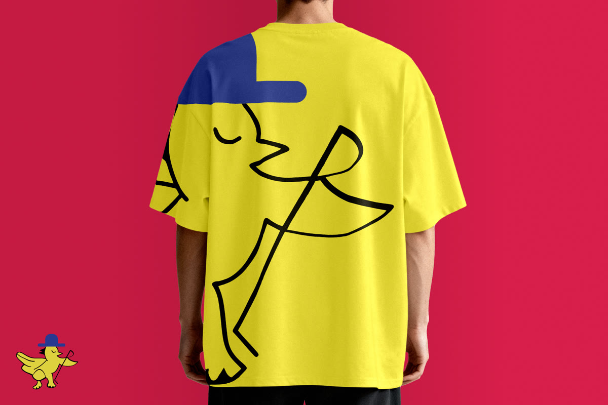

§ 01 — Identidad · food & beverage
Los Pollos Giros
Identidad visual para un concepto de comida rápida con personalidad propia, construida alrededor de un personaje simple y memorable.
Personaje central
Empaque · prendas · señalización
Autoría completa · FRZT

El personaje manda.
Antes que el logo o el color, el personaje. Un ícono simple, reproducible, capaz de cargar la marca solo.

Sistema alrededor del ícono.
Tipografía y color elegidos para sostener al personaje, no para competir con él.


El reto no era serio —
era memorable. Una identidad divertida
también sostiene un sistema.
— Criterio de marcaLos Pollos Giros · 2024
Lo que sigue: las aplicaciones reales — cómo el personaje sobrevive a la producción comercial.
Aplicaciones para producir.
1
Personaje principal
Empaque + Prendas
Aplicaciones tangibles
Comercial
Lógica de reproducción
Inventario de piezas
- PersonajeÍcono central diseñado para reproducción simple y reconocimiento inmediato.
- LogotipoWordmark con anclaje al personaje y aplicaciones modulares.
- EmpaqueCajas, bolsas y soportes listos para producción comercial.
- PrendasCamisetas y uniforme con jerarquía visual ligera.
- SeñalizaciónCartelería y rotulación adaptada a punto de venta.
Marca con voz.
Una marca reconocible desde el primer impacto, lista para vivir en empaque, prendas y señalización sin diluirse.
ClienteLos Pollos Giros
IndustriaFood & beverage · comida rápida
RolBrand designer · ilustración · sistema
EstudioFRZT Studio
Año2024
TipoProyecto propio · autoría completa
← Proyecto anteriorAMXiTechUI/UX · web · tech B2B
Siguiente proyecto →Neuromuscular MIDUI/UX · web · salud
© 2026 Julio Morcillo — Todos los derechos reservados.Diseñado y construido en Mérida, MX.